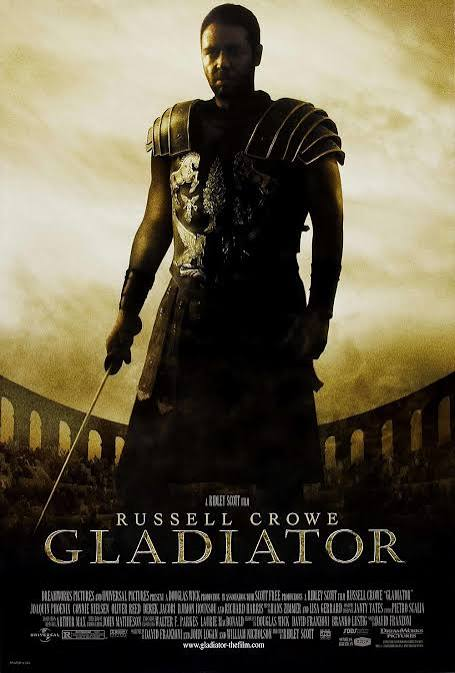
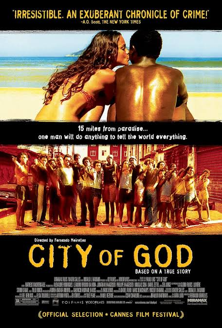
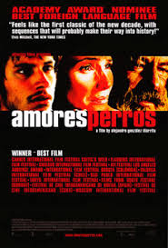

Gladiator
Año: 2000
Director: Ridley Scott
Género: Acción y drama histórico
What we do in life echoes in eternity
Tras la muerte del emperador Marco Aurelio, su astuto hijo toma el poder y degrada a Máximo, uno de los generales más capaces de Roma, a quien Marco Aurelio prefería. Finalmente, Máximo se ve obligado a convertirse en gladiador y luchar a muerte contra otros hombres para el entretenimiento de un público que paga por verlo.

El señor de los anillos: La comunidad del anillo
Año: 2001
Director: Peter Jackson
Género: Fantasía y aventura
one ring to rule them all
El joven hobbit Frodo Bolsón, tras heredar un misterioso anillo de su tío Bilbo, debe abandonar su hogar para evitar que caiga en manos de su malvado creador. En el camino, se forma una compañía para proteger al portador del anillo y asegurarse de que llegue a su destino final: el Monte del Destino, el único lugar donde puede ser destruido.

Requiem for a dream
Año: 2000
Director: Darren Aronofsky
Género:drama y horor
Las utopías creadas por las drogas de cuatro residentes de Coney Island se desmoronan cuando sus adicciones se vuelven profundas

Ciudad de Dios
Año: 2002
Directores: Fernando Meirelles y Kátia Lund
Género: Crimen y drama
If you run, the beast catches you; if you stay, the beast eats you.
En las favelas empobrecidas de Río de Janeiro en la década de 1970, dos jóvenes eligen caminos diferentes. Rocket es un fotógrafo en ciernes que documenta la creciente violencia relacionada con el narcotráfico en su barrio, mientras que José “Zé” Pequeno es un ambicioso narcotraficante que se adentra en una peligrosa vida delictiva.

Mystic river
Año: 2003
Directora:Clint eastwood
Género: Drama
We bury our sins, we wash them clean.
La vida de tres hombres que eran amigos desde la infancia se ve destrozada cuando uno de ellos sufre una tragedia familiar.

Amores perros
Año: 2000
Director:Alejandro Gonzalez Iñarritu
Género:drama , mexico
amor , traicion, muerte
Un fatal accidente automovilístico en la Ciudad de México desencadena una serie de acontecimientos en la vida de tres personas: una supermodelo, un joven que quiere fugarse con su cuñada y un hombre sin hogar.
Children Of Men
Año: 2006
Director:alfonso cuaron
Género: Acción y drama
El año 2027: los últimos días de la raza humana. No ha nacido ningún niño en 18 años. Debe proteger nuestra única esperanza.
En 2027, en un mundo caótico en el que los humanos ya no pueden procrear, un antiguo activista acepta ayudar a transportar a una mujer milagrosamente embarazada a un santuario en el mar, donde el nacimiento de su hijo podría ayudar a los científicos a salvar el futuro de la humanidad.
Bastardos Sin Gloria
Año: 2009
Director:quentin tarantino
Género: drama y comedia
Once upon a time in Nazi occupied France…
En la Francia ocupada por los nazis durante la Segunda Guerra Mundial, un grupo de soldados judeoamericanos conocidos como «Los Bastardos» son elegidos específicamente para sembrar el terror en todo el Tercer Reich arrancando cabelleras y asesinando brutalmente a nazis. Los Bastardos, liderados por el teniente Aldo Raine, pronto se cruzan con una adolescente judía francesa que regenta un cine en París, el cual se convierte en objetivo de los soldados.

Sin lugar para los débiles
Año: 2007
Directores: Joel y Ethan Coen
Género: Suspenso y crimen
There are no clean getaways
Llewelyn Moss descubre cadáveres, dos millones de dólares y un alijo de heroína en un desierto de Texas, pero el metódico asesino Anton Chigurh va tras ellos, con el sheriff local Ed Tom Bell pisándole los talones. Los papeles de presa y depredador se desdibujan a medida que la violenta búsqueda de dinero y justicia chocan.

El caballero de la noche
Año: 2008
Director: Christopher Nolan
Género: Acción y crimen
Welcome to world without rules
Batman sube la apuesta en su guerra contra el crimen. Con la ayuda del teniente Jim Gordon y el fiscal de distrito Harvey Dent, Batman se propone desmantelar las organizaciones criminales que aún asolan las calles. La alianza resulta eficaz, pero pronto se ven envueltos en el caos desatado por un genio criminal en ascenso, conocido por los aterrorizados ciudadanos de Gotham como el Joker.